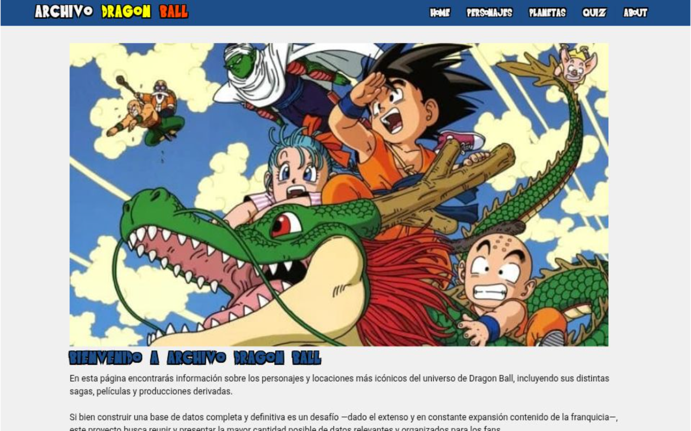
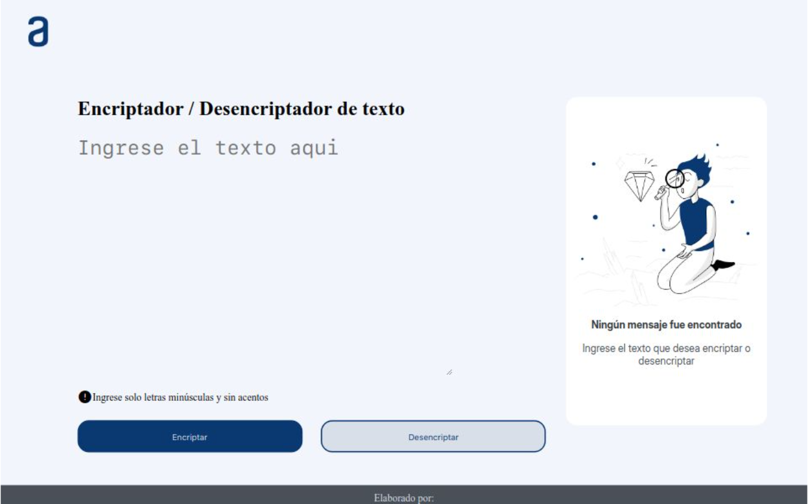
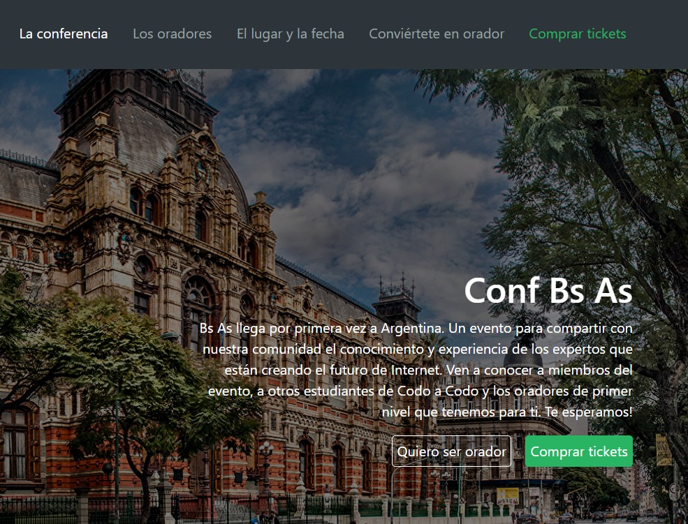
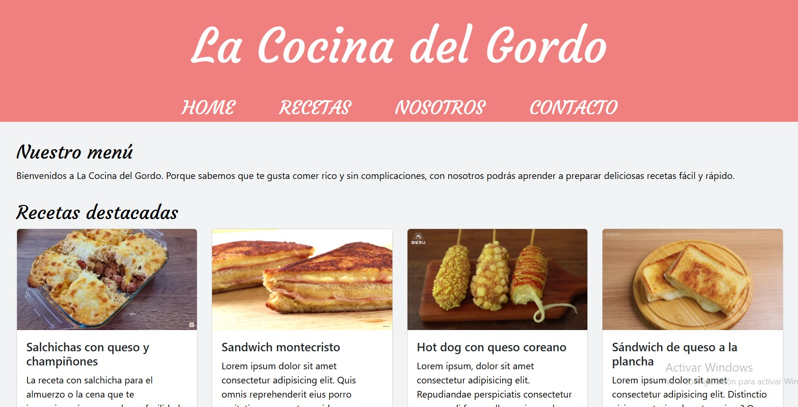
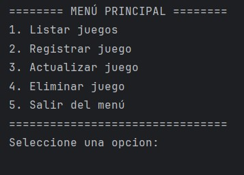
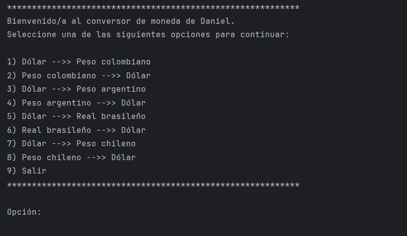
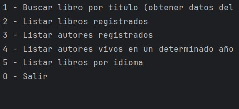

Mis proyectos
En esta sección se pueden encontrar algunos de los proyectos que he desarrollado utilizando JavaScrip, Java, Python y Next.js.

Web temática de Dragon Ball
Sitio web informativo sobre el anime Dragon Ball desarrollado con Next.js y consumo de una API.

Encriptador de texto
Aplicación web para cifrado y descifrado de mensajes de texto utilizando JavaScript.

Simulador de venta de entradas para un evento
Web interactiva que simula la página de un evento y el proceso de compra de tiquetes, diseñada para demostrar habilidades en maquetación, lógica de frontend y buenas prácticas de organización del código.

Página web de recetas de cocina
Página web desarrollada con HTML y CSS.

CRUD por consola con Python
Aplicación desarrollada en Python que implementa operaciones CRUD (crear, leer, actualizar y eliminar registros) por medio de la consola y que sirve para gestionar el inventario de videojuegos del usuario.

Conversor de moneda por consola con Java
Aplicación de consola desarrollada en Java que consume una REST API externa para obtener tasas de cambio en tiempo real.

Libros LiterAlura
Aplicación backend desarrollada con Java y Spring Boot para gestión de libros.